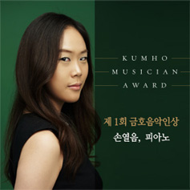
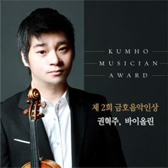
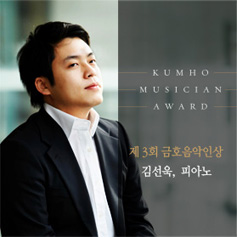
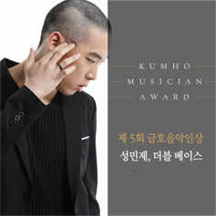
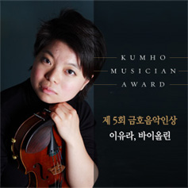
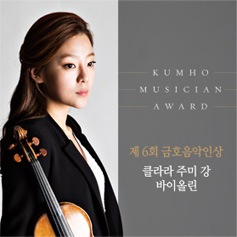
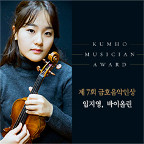

클래식 분야 최고 권위의 세계적인 젊은 음악가상,
금호 음악인상
금호아시아나문화재단은 만30세 미만의 전도유망한 젊은 한국의 클래식 기악 연주자 가운데 최근 가장 눈에 띄는 연주 성과를 보여준 젊은 음악인을 선발하는 금호음악인상을 2004년부터 제정하여 시상하고 있습니다.
클래식 음악계의 최고 권위의 상으로 자리매김한 금호음악인상은 클래식 음악 기악 분야 연주자 중 탁월한 음악성으로 남다른 성과를 이룩한 장차 우리나라 클래식 음악계를 이끌어 나갈 연주자를 찾아 포상하고 격려하는 상으로, 이들이 나아가 세계적인 음악가로 성장할 수 있도록 지원하는 미래지향적인 상입니다.
금호음악인상 수상자에게는 상금으로 미화 20,000불과 더불어 2년 간 아시아나 항공 비즈니스 클래스 국제선 탑승권이 제공되며, 금호아트홀에서의 독주회 기회와 함께 국내외 유수 오케스트라와의 협연 주선 및 해외 음악제 참가 기회를 제공하는 등 금호아시아나문화재단의 전폭적인 지원을 받게 됩니다.
금호 음악인상 역대수상자
- 
- 
- 
- 
- 
- 
- 
금호예술기금 사업,
예술의 전당 음악영재 캠프 & 콩쿠르
금호아시아나문화재단은 더욱 적극적인 클래식 음악 영재의 발굴 및 육성을 통해 한국 클래식 음악 발전에 이바지하고자 30억원을 조성하여 한국을 대표하는 공연장인 예술의전당에 금호예술기금을 기탁하였습니다.
금호아시아나문화재단은 예술의전당과 이 기금이 ‘클래식 음악 영재의 발굴 및 육성’이라는 목적에 합당하게 사용할 수 있도록 협의하였고, 그 결과 2009년에 제1회 예술의전당 음악영재 캠프&콩쿠르가 개최되게 되었습니다.
예술의전당 음악영재 캠프&콩쿠르는 기존의 콩쿠르 개념을 탈피하여 음악캠프의 형식에 콩쿠르의 특성을 가미한 독창적인 구조를 가지고 있습니다. 격년제로 운영되는 예술의전당 음악영재 캠프&콩쿠르에서는 만20세 미만의 피아노, 바이올린, 첼로의 3개 부문의 음악영재 참가자들에게 세계적인 음악가이자 교육자로 명성이 높은 교수들로부터 직접 지도 및 조언을 받는 특별한 기회를 제공합니다.
예술의전당 음악영재 캠프&콩쿠르에서는 각 악기 부문에서 1명의 음악영재를 선발하고, 이들 중 가장 우수한 음악영재 1명에게 ‘금호영재대상’을 수상합니다. 수상자에게는 예술의전당 기획공연 협연 기회와 금호아트홀에서의 독주회 기회가 부상으로 주어집니다.
- 2009년 제1회 예술의전당 음악영재 캠프&콩쿠르: 금호영재대상 김정은 Piano, 음악영재상 김봄소리 Violin, 이상은 Cello
- 2012년 제2회 예술의전당 음악영재 캠프&콩쿠르: 금호영재대상 정규빈 Piano, 음악영재상 서유민 Violin, 오혜린 Cello
- 2014년 제3회 예술의전당 음악영재 캠프&콩쿠르: 금호영재대상 이수빈 Violin, 음악영재상 우용기 Piano, 이동열 Cello